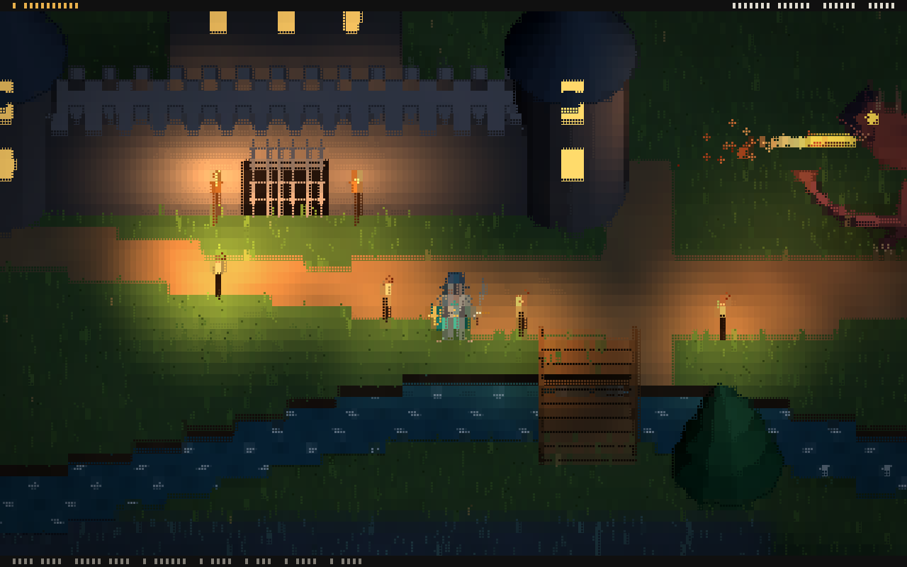

Start
ASCDII Engine
ASCDII Engine is a 2.5D game engine that renders with Unicode Braille characters. Worlds are built in a desktop editor, scripted in Lua, and built into games that run in any terminal with 24 bit color.

Features
| Area | Contents |
|---|---|
| Rendering | Boxes, cylinders, cones, spheres, planes, terrain with cliffs, models, camera facing sprites, shadows, point, spot and directional lights, fog, water and color grading, resolved per Braille dot. See Rendering. |
| Editor | Hierarchy, Scene and Game views with move, rotate and scale tools, Inspector, Project window, Console, Animation timeline, Animator graph, Particle Editor, Package Manager and builds. See The editor. |
| Objects | GameObjects with components, parent and child hierarchies, prefabs with overrides, references between objects and assets, and a camera component. See GameObjects and components and Scenes and prefabs. |
| Scripting | Lua scripts with Inspector fields and hooks, access to every object, component, the camera, the environment and the render pipeline, and reloading on save. See Lua scripting. |
| Animation | Clips with keys and easing, and animator controllers with states, parameters and transitions. See Animation. |
| Physics | Box, circle and mesh colliders, triggers and rigidbodies, edited in the Scene view. See Physics. |
| Audio | WAV and MP3 sounds played by audio sources and scripts. See Audio. |
| Particles | A particle system with nine presets and a Particle Editor. See Particles. |
| Assets | Textures, materials, OBJ models, sprites and packages, organized in any folder layout. See Assets and import. |
| Builds | A folder per platform with the player, the compiled game data and checksums, for Windows and Linux. See Build. |
Documentation
InstallRequirements, installation and starting the editor.
Your first gameCreating, editing, playing and saving a project.
The editorEvery panel, control and shortcut.
GameObjectsObjects, components, hierarchy, references, cameras.
Scenes and prefabsProjects, prefabs, overrides and world units.
Lua scriptingScripts, fields, hooks and hot reload.
Lua APIEvery function and field available to scripts.
RenderingFrames, passes, lights and terminal output.
BuildGame folders, compiled data and checksums.
CLI referenceEvery ascdii command and make target.
Go APIUsing the engine from Go and writing components.